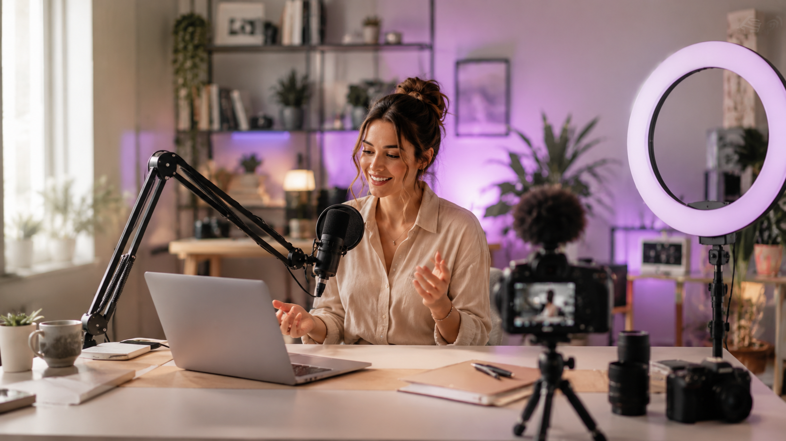

Viele glauben, dass man für gute TikToks, Reels oder UGC sofort eine teure Kamera braucht. In Wahrheit entscheidet am Anfang oft etwas ganz anderes: ein ruhiges Bild, gutes Licht, klarer Ton und ein Setup, das du auch wirklich regelmäßig benutzt.
Dieser Guide ist deshalb bewusst praktisch gehalten. Kein Technik-Roman, keine riesige Profi-Liste, sondern eine klare Übersicht: Was brauchst du wirklich, warum ist es wichtig und wann lohnt sich ein günstiger Einstieg oder ein besseres Upgrade?
1. Handy-Stativ: Warum es fast immer der erste sinnvolle Kauf ist
Was bringt dir ein Handy-Stativ wirklich? Es sorgt dafür, dass deine Videos ruhiger wirken, du beide Hände frei hast und du nicht jedes Mal improvisieren musst, wo dein Handy stehen soll.
Warum ist das so wichtig? Verwackelte Videos wirken schnell unruhig und unprofessionell. Ein Stativ gibt dir sofort mehr Kontrolle über Bildausschnitt, Höhe und Perspektive.
Worauf solltest du achten? Wichtig sind Stabilität, Höhe, sichere Handyhalterung und ein Fernauslöser. Wenn du dich beim Filmen bewegst, kann Auto-Tracking sinnvoll sein. Für Talking Videos, Reels oder Produktaufnahmen reicht zum Start auch eine einfachere Variante.
Passende Stativ-Optionen
180 cm, Auto-Tracking, 360° Gesichtsverfolgung und Zusatzleuchten.
Produkt ansehen →Eine günstigere Lösung, wenn du solide starten und vor allem stabil filmen willst.
Produkt ansehen →2. Handy-Monitor: Damit du mit der besseren Rückkamera filmen kannst
Warum überhaupt ein Handy-Monitor? Viele filmen mit der Selfie-Kamera, weil sie sich dann sehen können. Die Rückkamera ist aber oft deutlich besser. Ein externer Handy-Monitor löst genau dieses Problem: Du kannst mit der besseren Kamera filmen und trotzdem sehen, ob du gut im Bild bist.
Für wen lohnt sich das? Besonders für UGC, Beauty-Videos, Produktvideos, Vlogs und Reels, bei denen Bildausschnitt und Gesichtsausdruck wichtig sind.
Wann reicht eine günstigere Lösung? Wenn du nur kontrollieren willst, ob du richtig im Bild bist. Wenn du zusätzlich Licht oder mehr Komfort möchtest, lohnt sich eher ein stärkeres Creator-Upgrade.
Passende Handy-Monitor-Optionen
Praktisch für iPhone oder Android, wenn du dich bei der Rückkamera-Aufnahme sehen möchtest.
Produkt ansehen →Interessant, wenn du häufiger filmst und mehr Komfort beim Setup möchtest.
Produkt ansehen →3. Licht: Warum deine Videos dadurch sofort hochwertiger wirken
Warum ist Licht so entscheidend? Weil es sofort verändert, wie dein Gesicht, dein Raum und deine Produkte aussehen. Selbst mit einem guten Handy wirken Videos dunkel oder billig, wenn das Licht schlecht ist.
Was ist besser: Ringlicht oder kleines LED-Licht? Ein größeres Ringlicht ist gut, wenn du einen festen Platz hast. Ein kleines Clip- oder Selfie-Licht ist besser, wenn du flexibel bleiben möchtest.
Worauf solltest du achten? Auf verschiedene Lichtfarben, dimmbare Helligkeit und darauf, ob das Licht zu deinem Filmstil passt.
Passende Licht-Optionen
Gut für einen festen Creator-Platz, Produktdemos und Tischaufnahmen zuhause.
Produkt ansehen →Eine mobile Lösung für Reels, Vlogs, Videocalls oder Content unterwegs.
Produkt ansehen →4. Mikrofon: Warum guter Ton oft wichtiger ist als perfektes Bild
Warum brauchst du ein Mikrofon? Weil Menschen bei schlechtem Ton sehr schnell wegklicken. Wenn deine Stimme hallt, rauscht oder weit weg klingt, wirkt selbst ein schönes Bild weniger professionell.
Wann ist ein Lavalier-Mikrofon sinnvoll? Wenn du sprichst, erklärst, draußen filmst oder UGC-Videos erstellst.
Welche Variante passt besser? Für den Start reicht oft ein günstiges Plug-and-Play-Mikrofon. Wenn du öfter filmst, ist ein Set mit Ladekoffer und längerer Laufzeit bequemer.
Passende Mikrofon-Optionen
Einfach, kompakt und gut für den Einstieg, wenn du besseren Ton ohne komplizierte Technik willst.
Produkt ansehen →Für regelmäßige Creator, die längere Laufzeit und mehr Komfort beim Filmen möchten.
Produkt ansehen →
Bild, Ton und Licht arbeiten zusammen – nicht gegeneinander. KI5. Powerbank oder Speicher: Was ist für deinen Workflow wichtiger?
Wann brauchst du eher eine Powerbank? Wenn du unterwegs filmst, mehrere Videos nacheinander drehst oder dein Handy beim Aufnehmen, Bearbeiten und Hochladen schnell leer wird.
Wann brauchst du eher Speicher? Wenn du viel Videomaterial produzierst und ständig löschen, übertragen oder sortieren musst.
Was würde ich zuerst kaufen? Wenn dein Akku ständig leer ist: Powerbank. Wenn dein Speicher ständig voll ist: externe SSD.
Passende Akku- und Speicher-Optionen
Sinnvoll, wenn du unterwegs filmst und dein Akku regelmäßig zum Problem wird.
Produkt ansehen →6. Fernauslöser: Klein, günstig und überraschend praktisch
Wofür braucht man einen Fernauslöser? Damit du Aufnahmen starten kannst, ohne jedes Mal zum Handy laufen zu müssen. Das spart Zeit und macht Solo-Content deutlich entspannter.
Ist das ein Pflichtkauf? Nein. Aber es ist ein kleines Zubehörteil, das besonders praktisch wird, wenn du häufig allein filmst oder eine Szene mehrmals aufnehmen möchtest.
Praktischer Extra-Tipp
Klein, günstig und ideal für Selfies, Gruppenfotos und Solo-Content mit Smartphone oder Tablet.
Produkt ansehen →Häufige Fragen zum Creator Setup
Was ist das wichtigste Teil für den Anfang?
Meistens ein stabiles Handy-Stativ, weil es sofort mehr Ruhe und Struktur in deine Videos bringt.
Was verbessert die Videoqualität am schnellsten?
Gutes Licht. Es macht dein Bild sofort klarer und freundlicher.
Was verbessert die Wirkung deiner Videos am meisten?
Klarer Ton. Wenn man dich gut versteht, bleiben Menschen eher dran.
Was ist ein gutes Upgrade?
Ein Handy-Monitor für die Rückkamera, wenn du häufiger filmst und hochwertiger wirken möchtest.
Fazit: Du brauchst kein riesiges Studio – sondern ein Setup, das für dich funktioniert
Am Anfang geht es nicht darum, alles perfekt zu haben. Viel wichtiger ist, dass du ein Setup baust, das dich nicht aufhält. Starte mit Stativ, Licht und Mikrofon. Danach kannst du gezielt erweitern – mit Handy-Monitor, Powerbank, Speicher oder später einer kleinen Vlogging-Kamera.
So kaufst du nicht wahllos Technik, sondern baust dir Schritt für Schritt ein Creator-Setup, das wirklich zu deinem Alltag passt.